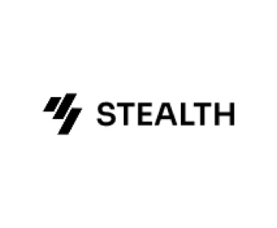

A custom CRM built from scratch to power a private performance media and customer acquisition company.

Stealth (NY Stealth) is a private, deliberately low-profile company that builds and operates digital customer acquisition systems. Its work spans high-volume performance media buying, proprietary traffic ecosystems, conversion-focused funnels, data-driven optimisation, and subscription and retention models, all run on in-house creative, development and operational systems. To support this, I built a custom CRM from scratch, tailored to the way the team actually works, so they could manage their operations on a system they fully own and control instead of relying on off-the-shelf tools.
Screenshots are not available. This is an active internal project, so its interface and details cannot be disclosed.
Visit Company Website